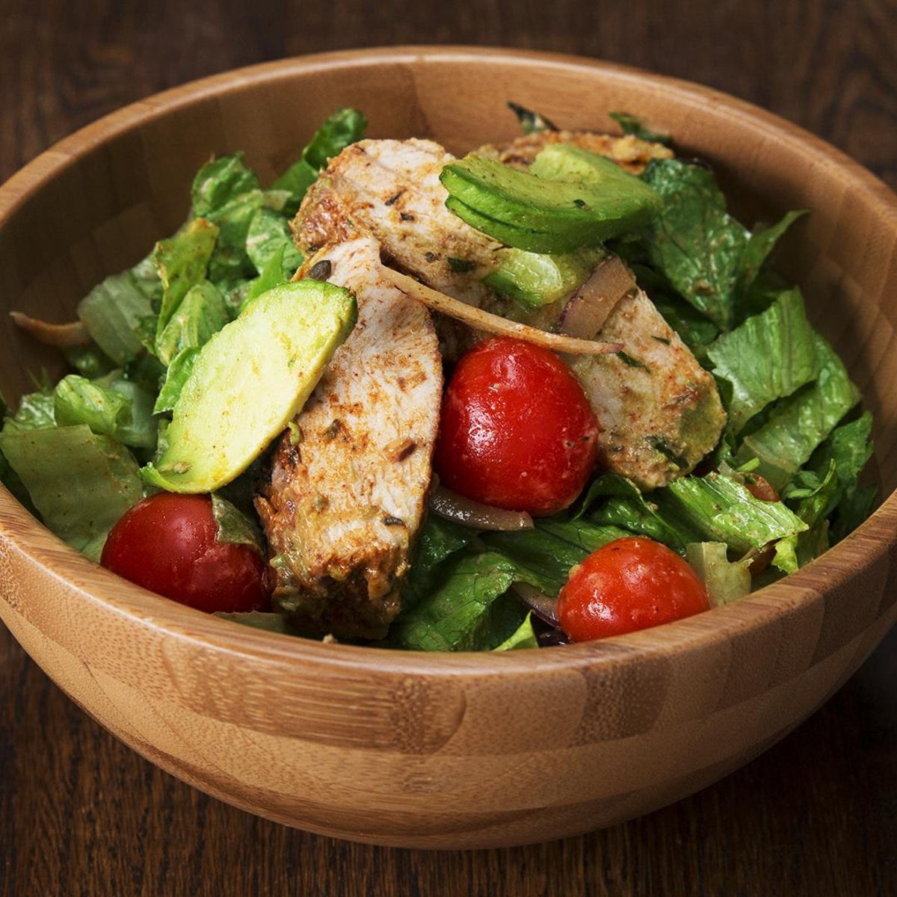

Chicken Salad

A light dish of grilled chicken fillets and authentic salad
with Kalamata olives, feta cheese, tomato and mint.
Ingredients
- 225g of Quinoa
- 25g of butter
- 1 red chilli
- 1 garlic clove crushed
- 400g chicken mini fillets
- 1 1/2 tsb of extra virgin olive oil
- 300g vine tomatoes
- Handful pitted black Kalamata olives
- 1 Red onion finley chopped
- 100g feta cheese
- small bunch of mint leaves
- juice and zest
Recipe
STEP 1
Cook the quinoa following the pack for instructions
mix in the butter, chilli and garlic - toss the chicken fillets in two tsb of olive oil
lay in a hot griddle pan and cook for 3-4 minutes each side, transfer to a plate. dot with
spicey butter and set aside to melt
STEP 2
add the tomatos, olives, onions and feta with some mint, into a bowl.
toss in the cooked
quinoa stir through the remaining olive oil, lemmon juice and zest. season well. service with
the chicken fillets on top.